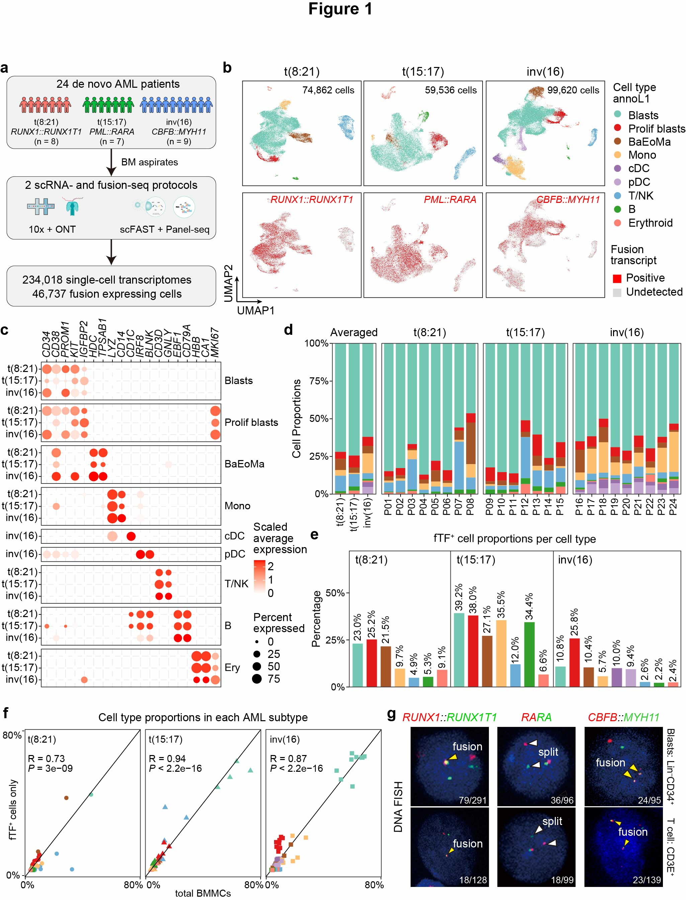

scAML Project
2024-10-30
1 Figure 1
 Fig.1 | scRNA-seq profiling and detection of fusion gene transcripts in AMLs expressing RUNX1::RUNX1T1, PML::RARA, or CBFB::MYH11.
a, Schematics of the study design. b, Top panel: UMAP visualization of nine broad cell types from various AML subtypes. Colors indicate major cell types (annotation level 1: annoL1). Bottom panel: UMAP visualization of cells expressing RUNX1::RUNX1T1, PML::RARA, or CBFB::MYH11, where red and grey dots indicate fusion transcript-positive and fusion transcript undetected cells, respectively. The total number of cells for each AML subtype is indicated at the top. c, Normalized expression profiles of representative marker genes for cell type annotation: Blasts (CD34, PROM1), Proliferating blasts (MKI67), BaEoMa (HDC, TPSAB1), monocytes (LYZ, CD14), cDC (CD1C), pDC (BLNK), T/NK cells (CD3D, GNLY), B cells (EBF1, CD79A), Erythroid cells (HBB, CA1). d, Fractions of annotated cell types (annoL1) in t(8;21), t(15:17), and inv(16) AML subtypes. Averaged fractions per AML subtype are shown at the left. Fractions for individual AML patients are shown at right. Cell types were color-coded based on annotations from panel b. e, Percentage of fusion transcript-positive cells in each major cell type of t(8;21) (left), t(15;17) (middle), and inv(16) (right) AML subtypes. Cell types were color-coded based on annotations from panel b. f, Scatter plots comparing cell type composition of fusion transcript-positive cells vs. all BMMCs for t(8;21) (left), t(15;17) (middle), and inv(16) (right) AML subtypes. Spearman correlation coefficients and P-values are shown. Cell types were color-coded based on annotations from panel b. Each point represents a different cell type within an AML sample, with circles denoting t(8;21), triangles representing t(15;17), and squares indicating inv(16) AML subtypes, respectively. g, Representative fluorescent confocal images from DNA-FISH experiments. Dual gene probes were used for the detection of RUNX1::RUNX1T1 and CBFB::MYH11 (yellow arrowheads indicate fusion genes). Split gene probes were used for the detection of PML::RARA (white arrowheads indicate the splitting of two portions of the RARA gene). Leukemic blasts and T-like cells were sorted by the following FACS strategy: Lin-CD34+CD117+ for t(8;21)’s and inv(16)’s blasts, Lin-CD34-CD117+ for t(15;17)’s blast; CD3E+ for T lymphocytes for all three AML subtypes.
1.1 (b) UMAP distribution across AML
anno_color <- c("#73C8B4", "#E31A1C", "#A65628", "#FDBF6F", "#9970AB", "#C2A5CF", "#6BAED6", "#33A02C", "#FB8072")
anno_name <- c("Progs", "Progs_Prolif", "Progs_BaEoMa", "Mono", "cDC", "pDC", "T.NK", "B", "Erythroid")
names(anno_color) <- anno_name
scAE.anno <- read_rds(paste0(in_dir, "Table1.3.scAE_harmony.anno.rds"))
scAPL.anno <- read_rds(paste0(in_dir, "Table1.3.scAPL_harmony.anno.rds"))
scCM.anno <- read_rds(paste0(in_dir, "Table1.3.scCM_harmony.anno.rds"))
## visualization
p1_1 <- DimPlot(scAE.anno, reduction = "umap", group.by = "annoL1",
label = F, repel = F, raster = T, cols = anno_color, pt.size = 0.4) + labs(title = "M2")
p2_1 <- DimPlot(scAPL.anno, reduction = "umap", group.by = "annoL1",
label = F, repel = F, raster = T, cols = anno_color, pt.size = 0.4) + labs(title = "M3")
p3_1 <- DimPlot(scCM.anno, reduction = "umap", group.by = "annoL1",
label = F, repel = F, raster = T, cols = anno_color, pt.size = 0.4) + labs(title = "M4")
p1_2 <- DimPlot(scAE.anno, reduction = "umap", group.by = "fus_group", label = F, repel = T, order = T, raster = T,
pt.size = 0.01, na.value = "#D9D9D9", cols = c("#E41A1C", "#D9D9D9")) + labs(title = "M2")
p2_2 <- DimPlot(scAPL.anno, reduction = "umap", group.by = "fus_group", label = F, repel = T, order = T, raster = T,
pt.size = 0.01, na.value = "#D9D9D9", cols = c("#E41A1C", "#D9D9D9")) + labs(title = "M3")
p3_2 <- DimPlot(scCM.anno, reduction = "umap", group.by = "fus_group", label = F, repel = T, order = T, raster = T,
pt.size = 0.01, na.value = "#D9D9D9", cols = c("#E41A1C", "#D9D9D9")) + labs(title = "M4")
pdf(paste0(out_dir, "Fig1b.pdf"), width = 9, height = 5)
p1_1 + p2_1 + p3_1 + p1_2 + p2_2 + p3_2 + plot_layout(ncol = 3, guides = "collect")
dev.off()1.2 (c) Dotplot of marker genes
idx1 <- c("CD34", "CD38", "PROM1", "KIT", "IGFBP2", "HDC", "TPSAB1", "LYZ", "CD14", "CD1C", "IRF8", "BLNK", "CD3D", "GNLY", "EBF1", "CD79A", "HBB", "CA1", "MKI67")
p1_b <- DotPlot(object = scAE.anno, assay = "RNA", features = idx1)
p2_b <- DotPlot(object = scAPL.anno, assay = "RNA", features = idx1)
p3_b <- DotPlot(object = scCM.anno, assay = "RNA", features = idx1)
df <- rbind(
p1_b$data %>% mutate(FAB = "M2AE"),
p2_b$data %>% mutate(FAB = "M3PR"),
p3_b$data %>% mutate(FAB = "M4CM")
) %>%
mutate(id = factor(id, levels = anno_name))
pdf(paste0(out_dir, "Fig1c.pdf"), width = 8.5, height = 4.5)
df %>% ggplot() +
geom_point(aes(x = FAB, y = features.plot, color = avg.exp.scaled, size = pct.exp)) +
facet_grid(~ id, scales = "free_x", space = "free") +
scale_color_gradient2(midpoint = 0, low = "white", mid = "white", high = "red") +
theme_bw() +
theme(axis.text.x = element_text(angle = 90, hjust = 1, vjust = 0.5)) +
scale_y_discrete(limits = rev)
dev.off()1.3 (d) Bar charts
df_a1 <- rbind(scAE.anno@meta.data %>% group_by(seurat_clusters) %>% summarise(N = n()) %>%
mutate(Freq = (N/sum(N)), orig.ident = "Merged") %>%
dplyr::select(orig.ident, seurat_clusters, N, Freq) %>%
mutate(FAB = "M2AE"),
scAPL.anno@meta.data %>% group_by(seurat_clusters) %>% summarise(N = n()) %>%
mutate(Freq = (N/sum(N)), orig.ident = "Merged") %>%
dplyr::select(orig.ident, seurat_clusters, N, Freq) %>%
mutate(FAB = "M3PR"),
scCM.anno@meta.data %>% group_by(seurat_clusters) %>% summarise(N = n()) %>%
mutate(Freq = (N/sum(N)), orig.ident = "Merged") %>%
dplyr::select(orig.ident, seurat_clusters, N, Freq) %>%
mutate(FAB = "M4CM"))
df_a2 <- rbind(scAE.anno@meta.data %>% group_by(orig.ident, seurat_clusters) %>% summarise(N = n()) %>%
group_by(orig.ident) %>% mutate(Freq = (N/sum(N))) %>%
dplyr::select(orig.ident, seurat_clusters, N, Freq) %>%
mutate(FAB = "M2AE"),
scAPL.anno@meta.data %>% group_by(orig.ident, seurat_clusters) %>% summarise(N = n()) %>%
group_by(orig.ident) %>% mutate(Freq = (N/sum(N))) %>%
dplyr::select(orig.ident, seurat_clusters, N, Freq) %>%
mutate(FAB = "M3PR"),
scCM.anno@meta.data %>% group_by(orig.ident, seurat_clusters) %>% summarise(N = n()) %>%
group_by(orig.ident) %>% mutate(Freq = (N/sum(N))) %>%
dplyr::select(orig.ident, seurat_clusters, N, Freq) %>%
mutate(FAB = "M4CM")) %>%
mutate(orig.ident = factor(orig.ident, levels = s_list))
p_a1 <- ggplot(df_a1, aes(x = FAB, y = Freq, fill = seurat_clusters)) + geom_col(width = 0.8) +
scale_y_continuous(labels = scales::percent) + theme_bw() +
scale_fill_manual(values = anno_color) +
theme(axis.title.x = element_blank(),
axis.text.x = element_text(angle = 45, hjust = 1, vjust = 1)) +
labs(y = "Cell Proportions")
p_a2 <- ggplot(df_a2, aes(x = orig.ident, y = Freq, fill = seurat_clusters)) + geom_col(width = 0.8) +
scale_y_continuous(labels = scales::percent) + theme_bw() +
scale_fill_manual(values = anno_color) +
facet_grid(~ FAB, scales = "free_x", space = "free") +
theme(axis.title.x = element_blank(),
axis.text.x = element_text(angle = 45, hjust = 1, vjust = 1)) +
labs(y = "Cell Proportions")
pdf(paste0(out_dir, "Fig1d.pdf"), width = 8, height = 3.5)
p_a1 + p_a2 + plot_layout(ncol = 2, widths = c(0.35, 2.4), guides = "collect")
dev.off()1.4 (e) Distribution of fusion positive cells
df1 <- rbind(scAE.anno@meta.data %>% group_by(seurat_clusters, fus_group) %>% summarise(N = n()) %>%
mutate(Freq = (N/sum(N)), orig.ident = "Merged") %>%
filter(!is.na(fus_group)) %>% dplyr::select(orig.ident, seurat_clusters, N, Freq) %>%
mutate(FAB = "M2AE"),
scAPL.anno@meta.data %>% group_by(seurat_clusters, fus_group) %>% summarise(N = n()) %>%
mutate(Freq = (N/sum(N)), orig.ident = "Merged") %>%
filter(!is.na(fus_group)) %>% dplyr::select(orig.ident, seurat_clusters, N, Freq) %>%
mutate(FAB = "M3PR"),
scCM.anno@meta.data %>% group_by(seurat_clusters, fus_group) %>% summarise(N = n()) %>%
mutate(Freq = (N/sum(N)), orig.ident = "Merged") %>%
filter(!is.na(fus_group)) %>% dplyr::select(orig.ident, seurat_clusters, N, Freq) %>%
mutate(FAB = "M4CM")) %>%
mutate(seurat_clusters = factor(seurat_clusters, levels = anno_name))
p1 <- ggplot(df1, aes(x = seurat_clusters, y = Freq, fill = seurat_clusters)) + geom_col(width = 0.65) +
geom_text(aes(label = scales::percent(Freq, accuracy = .1)), position = "stack", vjust = 1, size = 3) +
scale_y_continuous(labels = scales::percent) + theme_bw() +
scale_fill_manual(values = anno_color) +
facet_grid(~ FAB, scales = "free_x", space = "free") +
theme(axis.text.x = element_text(angle = 90, hjust = 1, vjust = 0.5),
axis.title.x = element_blank(), legend.position = "none") +
scale_y_continuous(labels = percent_format(), limits = c(0, 1)) +
labs(y = "Fus Proportions in Each Cluster")
pdf(paste0(out_dir, "Fig1e.pdf"), width = 6, height = 4)
p1
dev.off()1.5 (f) Scatter plots
df4 <- rbind(scAE.anno@meta.data %>% group_by(orig.ident, seurat_clusters, fus_group) %>% summarise(N = n()) %>%
filter(!is.na(fus_group)) %>%
group_by(orig.ident) %>% mutate(Freq = (N/sum(N))) %>%
dplyr::select(orig.ident, seurat_clusters, N, Freq) %>%
mutate(FAB = "M2AE"),
scAPL.anno@meta.data %>% group_by(orig.ident, seurat_clusters, fus_group) %>% summarise(N = n()) %>%
filter(!is.na(fus_group)) %>%
group_by(orig.ident) %>% mutate(Freq = (N/sum(N))) %>%
dplyr::select(orig.ident, seurat_clusters, N, Freq) %>%
mutate(FAB = "M3PR"),
scCM.anno@meta.data %>% group_by(orig.ident, seurat_clusters, fus_group) %>% summarise(N = n()) %>%
filter(!is.na(fus_group)) %>%
group_by(orig.ident) %>% mutate(Freq = (N/sum(N))) %>%
dplyr::select(orig.ident, seurat_clusters, N, Freq) %>%
mutate(FAB = "M4CM")) %>%
mutate(orig.ident = factor(orig.ident, levels = s_list))
df_merge <- df_a2 %>% left_join(., df4, by = c("orig.ident" = "orig.ident", "seurat_clusters" = "seurat_clusters", "FAB" = "FAB"))
pdf(paste0(out_dir, "Fig1f.pdf"), width = 6.5, height = 3.8)
ggplot(df_merge, aes(Freq.x, Freq.y)) +
geom_point(aes(color = seurat_clusters, shape = FAB), size = 2) +
facet_wrap(~ FAB) +
scale_color_manual(values = anno_color) +
geom_abline(slope = 1) +
ggpubr::stat_cor(method = "spearman", label.x = 0, label.y = .75) +
scale_x_continuous(labels = scales::percent, limits = c(0, 0.8)) +
scale_y_continuous(labels = scales::percent, limits = c(0, 0.8)) +
labs(x = "Cell Proportions", y = "Fus+ Proportions") +
theme_bw() + theme(legend.key.size = unit(0.4, "cm"), legend.position = "bottom")
dev.off()